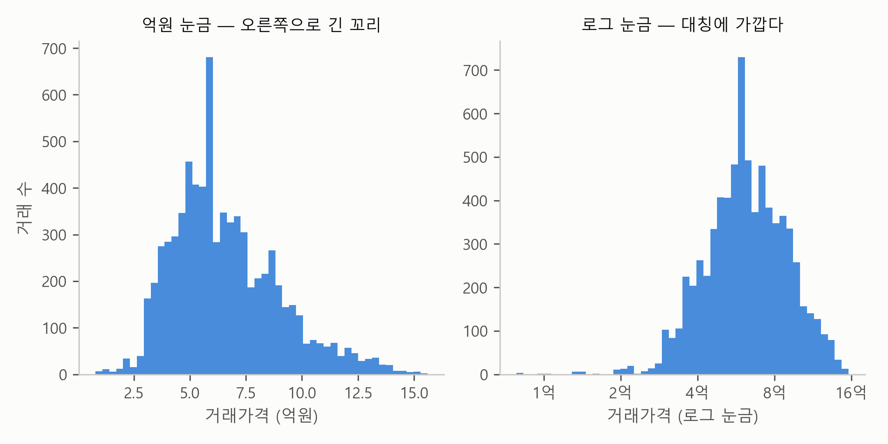
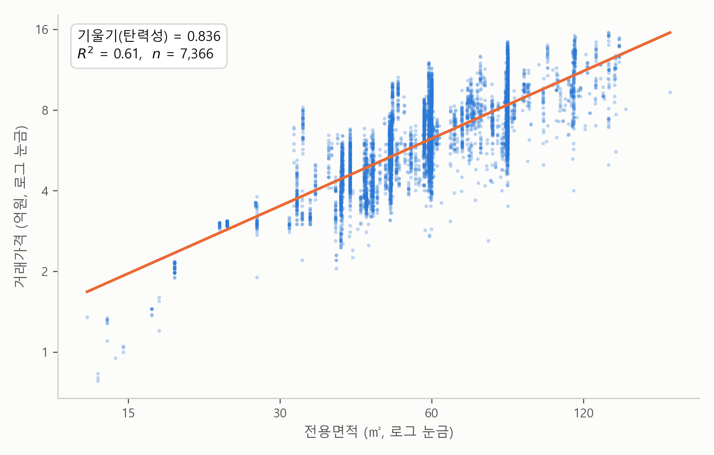
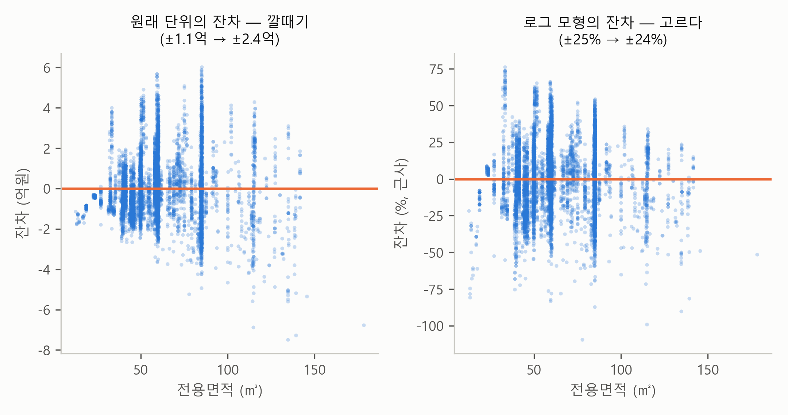

5. 로그로 읽는 가격 — 탄력성과 % 해석#
▶ 이 절의 강의영상
준비 중입니다. 영상이 공개되면 이 자리에 링크가 걸립니다.
이 장 첫머리 보고서에서 이제 한 대목만 남았습니다. 보조 분석의 이 문장입니다.
로그-로그 사양에서는 탄력성이 0.84 (95% CI 0.82~0.85)다. 면적이 1% 넓으면 가격은 약 0.8% 높다는 뜻으로, 1보다 작으므로 큰 평수일수록 ㎡당 단가는 낮아진다.
낯선 말이 둘 등장합니다. 로그와 탄력성입니다. 그리고 앞 절은 “큰 값일수록 크게 흩어지는 데이터에는 로그를 취하라”는 처방을 예고하며 끝났습니다. 이 절에서는 로그가 무엇이고, 왜 가격 데이터의 처방이 되며, 탄력성 추정값 0.84를 어떻게 읽는지를 다룹니다. 이 절이 끝나면 보고서를 처음부터 끝까지, 한 줄도 빠짐없이 읽은 것이 됩니다.
가격은 곱하기의 세계#
아파트 가격이 움직이는 방식을 생각해 보죠. 뉴스는 “노원구 아파트가 5% 올랐다”라고 말하지, “5천만원 올랐다”라고 말하지 않습니다. 3억짜리 아파트가 1천만원 오른 것과 15억짜리 아파트가 1천만원 오른 것은 전혀 다른 사건이기 때문입니다. 계산해 보면 앞은 3.3%나 오른 것이고, 뒤는 겨우 0.7%입니다. 거꾸로 두 아파트가 똑같이 5%씩 오르면 금액으로는 1,500만원과 7,500만원. 금액은 달라도 같은 사건이죠. 이것이 이 절 전체를 꿰는 한 문장입니다.
가격은 더하기가 아니라 곱하기(%)로 움직인다.
앞 절의 잔차에서 본 깔때기 패턴, 즉 비싼 아파트일수록 빗나감도 커지던 것의 정체가 바로 이것입니다. 금액으로는 커지지만, %로 보면 비슷한 빗나감이었던 거죠.
곱하기로 움직이는 데이터에는 곱하기에 맞는 눈금이 있습니다. 그것이 로그 눈금(log scale)입니다. 우리가 일반적으로 쓰는 눈금은 눈금 사이의 간격을 “얼마를 더했는가”로 매깁니다. 1억에서 2억으로 가는 한 칸과 15억에서 16억으로 가는 한 칸이 같은 거리인데, 둘 다 “+1억”이기 때문입니다. 로그 눈금은 눈금 사이의 간격을 “몇 배가 되었는가”로 매깁니다. 1억에서 2억, 2억에서 4억, 4억에서 8억, 8억에서 16억이 모두 같은 한 칸인데, 모두 “×2배”이기 때문입니다. 한마디로, 일반 눈금에서는 “+1억”이 어디서나 같은 거리이고, 로그 눈금에서는 “×2배”가 어디서나 같은 거리입니다. 그림 5-1이 노원구 아파트 매매 7,366건의 가격 분포를 두 눈금으로 나란히 그린 것입니다.

그림 5-1. 같은 가격 7,366건을 억원 눈금(왼쪽)과 로그 눈금(오른쪽)으로 그린 히스토그램. 로그 눈금의 가로축은 1억, 2억, 4억, 8억, 16억이 같은 간격이다.
왼쪽 패널의 억원 눈금에서는 분포가 오른쪽으로 꼬리를 길게 뺍니다. 싼 아파트는 아래로 한계가 있지만 비싼 아파트는 위로 열려 있으니까요. 오른쪽 패널처럼 로그 눈금으로 바꾸어 가로축이 1, 2, 4, 8, 16억으로 2배가 될 때마다 한 칸씩 가도록 하면, 같은 데이터가 대칭에 가까운 산 모양이 됩니다. 가격 데이터가 로그 눈금을 “제 눈금”으로 여긴다는 첫 번째 신호입니다.
로그 눈금에서 다시 그은 회귀직선#
이번에는 가격만이 아니라 전용면적에도 로그 눈금을 쓰고, 그 위에서 회귀직선을 다시 그어 보죠. 보고서가 “로그-로그 사양”이라고 부른 것이 바로 이것입니다. 그림 5-2가 그 결과입니다.

그림 5-2. 전용면적과 가격을 모두 로그 눈금으로 놓은 산점도. 두 축 모두 “2배가 될 때마다 한 칸”이다.
그림에서 보듯이 로그 눈금에서도 점들은 직선을 따라 늘어서고, 직선이 자료에 맞는 정도는 오히려 좋아져서 \(R^2\)이 원래 단위의 0.54에서 0.61로 올라갑니다. 중요한 것은 이 직선의 기울기 추정값 0.84가 갖는 뜻입니다. 두 축이 모두 “% 눈금”이므로, 기울기는 %와 %의 비율이 됩니다.
로그-로그 직선의 기울기 = 면적이 1% 넓을 때 가격이 몇 % 높은가
이런 “%의 비율”을 탄력성(elasticity)이라고 부릅니다. 탄력성 추정값 0.84는 “면적이 1% 넓으면 가격은 평균 0.84% 높다”로 읽습니다.
탄력성 0.84를 읽으면 — 단가의 체감#
탄력성이 정확히 1이라면 면적과 가격이 같은 비율로 움직인다는 뜻입니다. 면적이 42% 넓으면 가격도 42% 높고, ㎡당 단가는 평수와 무관하게 일정하겠죠. 그런데 노원구의 탄력성 추정값은 1보다 작은 0.84입니다. 면적이 늘어나는 만큼 가격이 다 따라가지 못한다는 것, 즉 큰 평수일수록 ㎡당 단가가 낮아진다는 뜻입니다.
실제 수치로 확인해 보죠. 전용 59㎡의 기준 가격은 6.2억(㎡당 1,046만원)이고, 전용 84㎡는 8.3억(㎡당 987만원)입니다. 여기서 기준 가격이란 로그-로그 회귀직선이 그 면적에 대해 예측하는 가격, 즉 그 면적대의 평균적인 아파트라면 얼마쯤이겠는가 하는 값을 말합니다. 전용 59㎡와 84㎡를 비교하면, 면적이 42% 넓어지는 동안 단가는 6%쯤 내려갑니다. 보고서의 마지막 문장 “큰 평수일수록 ㎡당 단가는 낮아진다”가 바로 이 계산이었습니다.
처방은 통했나 — 잔차로 확인#
앞 절에서 원래 단위의 잔차는 깔때기 패턴을 보였습니다. 로그가 정말 처방이 됐는지, 두 모형의 잔차를 나란히 놓고 확인해 보죠.

그림 5-3. 원래 단위 모형의 잔차(왼쪽)와 로그-로그 모형의 잔차(오른쪽). 오른쪽의 세로축은 %로 읽을 수 있다.
왼쪽 패널은 앞 절에서 본 깔때기입니다. 보통의 빗나감이 40㎡ 아래에서 ±1.1억이던 것이 100㎡를 넘으면 ±2.4억으로 두 배 넘게 커집니다. 오른쪽 패널의 로그 모형에서는 빗나감이 %로 측정되는데, 40㎡ 아래 ±25%, 100㎡ 넘어서도 ±24%로 평수와 무관하게 고릅니다. 금액의 눈금에서는 울퉁불퉁하던 자료가 %의 눈금에서는 공정하게 보이는 것입니다. 다만 오해는 말아야 합니다. 로그를 취해도 빗나감 자체가 없어지는 것은 아닙니다. 빗나감을 측정하는 눈금이 데이터의 성질에 맞게 바뀔 뿐입니다.
로그가 들어간 계수를 읽는 규칙#
로그는 가격에만 취할 수도 있고, 전용면적에만 취할 수도 있고, 둘 다에 취할 수도 있습니다. 로그를 취하지 않는 경우까지 모두 네 가지인데, 계수 읽기는 다음 네 줄 규칙으로 정리됩니다. \(b\)가 계수 추정값일 때:
식의 꼴 |
계수 \(b\)를 읽는 법 |
|---|---|
가격 ~ 면적 |
면적이 1㎡ 넓으면 가격이 \(b\)억원 높다 |
가격 ~ 로그면적 |
면적이 1% 넓으면 가격이 약 (\(b\)÷100)억원 높다 |
로그가격 ~ 면적 |
면적이 1㎡ 넓으면 가격이 약 (100×\(b\))% 높다 |
로그가격 ~ 로그면적 |
면적이 1% 넓으면 가격이 \(b\)% 높다 (탄력성) |
핵심만 기억하면 됩니다. 로그가 붙은 쪽은 %로 읽고, 안 붙은 쪽은 원래 단위로 읽는다. 둘 다 로그면 %와 %의 비율, 곧 탄력성이다. 로그가 들어간 아래 세 줄은 변화가 크지 않을 때 성립하는 근사이지만, 실용적으로는 이대로 읽으면 충분합니다. 이 규칙은 다음 장의 다중회귀에서 그대로 다시 씁니다. 거기서는 “아파트의 층이 하나 높으면 가격이 몇 %, 1년 오래되면 몇 %” 같은 읽기가 쏟아져 나옵니다.
💡 팁: 받은 보고서가 가격을 원래 단위로만 분석했다면, AI에게 “가격에 로그를 취해 다시 추정해 줘”라고 요청해 보세요. 가격, 소득, 매출처럼 오른쪽으로 꼬리가 긴 금액 데이터는 거의 언제나 로그 쪽이 낫습니다.
요약 — 직관적 의미
가격은 더하기가 아니라 곱하기(%)로 움직인다. 아래 세 개념은 전부 그 눈금 이야기다.
로그 눈금 — 곱하기를 더하기로 바꾸는 눈금. “×2배”가 어디서나 같은 거리다.
탄력성 — 전용면적이 1% 넓을 때 가격이 몇 % 높은가. 로그-로그 직선의 기울기.
탄력성 < 1 — 면적이 늘어나는 만큼 가격이 다 따라가지 못한다. 큰 평수일수록 ㎡당 단가가 낮다.
남는 질문#
이것으로 이 장 첫머리의 보고서를 끝까지 읽었습니다. 회귀직선이 어떻게 그어지는지(최소제곱), 기울기 추정값을 믿어도 되는지(표준오차, 신뢰구간, \(t\)값, \(p\)값), 얼마나 설명하는지(\(R^2\), 잔차), 그리고 %의 언어로는 어떻게 읽는지(로그, 탄력성)까지요.
그런데 보고서의 한계 문장이 하나 남아 있습니다. “전용면적은 층, 연식, 단지와 얽혀 있으므로, ‘다른 조건이 같을 때’의 면적 효과는 다중회귀가 필요하다.” 노원구 안에서는 면적 하나로도 절반을 설명했지만, 무대를 서울 전체로 넓히면 어떻게 될까요? 강남의 59㎡와 노원의 84㎡가 한 데이터에 섞이는 순간, 면적 하나로 그은 회귀직선은 이상한 말을 하기 시작합니다. 다음 장의 주제입니다.